Ходисалар устида амаллар. Шартли эхтимоллик
Иккита А и В тасодифий ходисалар бир-бири билан канчалик богланган, бу ходисалардан биттасининг содир бўлиши иккинчисининг содир бўлиш имкониятига кай даражада таъсир килади деган савол тез-тез пайдо бўлади.
Иккита ходиса ўртасидаги богланишнинг энг содда мисоли сифатида ходисалардан бирининг содир бўлиши иккинчисининг албатта содир бўлишига олиб келадиган ёки, аксинча, ходисалардан бирининг содир бўлиши иккинчисининг содир бўлиш имкониятини йўкка чикарадиган холатларни келтириш мумкин.
Агар эксперимент натижасида А ва В ходисалар бир вактнинг ўзида рўй бериши мумкин бўлмаса, улар биргаликда бўлмаган ходисалар деб аталади, акс холда эса биргаликда бўлган ходисалар деб аталади.
1-мисол. Яшикдан таваккалига битта деталь олинди. Унинг стандарт бўлиши ностандарт эканлигини истисно килади. «Таваккалига олинган деталнинг стандарт бўлиши» ва «Таваккалига олинган деталнинг ностандарт бўлиши» ходисалари биргаликда бўлмаган ходисалардир.
Агар ходисалар элементар ходисалар фазосининг кисм тўпламлари сифатида каралса, у холда ходисалар ўртасидаги муносабатларни тўпламлар ўртасидаги муносабатлар сифатида талкин килиш мумкин. Биргаликда бўлмаган ходисалар — бу умумий элементар ходисаларга эга бўлмаган ходисалардир.
Агар эксперимент натижасида А ходисанинг рўй
беришидан В ходисанинг рўй бериши албатта келиб чикса, А ходиса В ходисани
эргаштиради дейилади ва бу 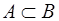 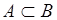 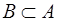 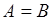
2-мисол. Шашколтош ташланмокда. «4 ракамли томон чикди» ходисаси «жуфт очко чикди» ходисасини эргаштиради.
Иккита А ва В ходисаларнинг йигиндиси деб
ё А ходисанинг, ё В ходисанинг, ё шу иккала ходисанинг рўй
беришидан иборат бўлган ходисага айтилади. У А+В ёки 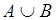
Бир нечта ходисаларнинг йигиндиси деб шу ходисалардан хеч бўлмаганда биттасининг рўй беришидан иборат бўлган ходисага айтилади.
3-мисол. Замбаракдан икки марта ўк узилмокда. Агар А ходиса биринчи ўк узишда нишонга тегиш, В эса иккинчи ўк узишда нишонга тегиш ходисаси бўлса, у холда А+В ходисаси ё биринчи ўк узишда, ё иккинчи ўк узишда, ё иккала ўк узишда нишонга тегиш ходисаси бўлади.
Иккита А ва В ходисаларнинг кўпайтмаси деб А ва В ходисаларнинг биргаликда рўй
беришидан иборат бўлган ходисага айтилади. У АВ ёки 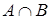
4-мисол. Яшикда биринчи ва иккинчи сонли заводларда ишлаб чикарилган деталлар бор. Агар А ходиса стандарт деталнинг чикиши, В эса деталь биринчи сонли заводда тайёрланган ходисаси бўлса, у холда АВ ходисаси биринчи сонли заводнинг стандарт детали чикиши ходисаси бўлади.
А ходисага карама-карши ходиса 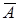 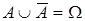
5-мисол. Ўк узишда нишонга тегиш ва хато кетиш — карама-карши ходисалар. Агар А нишонга тегиш бўлса, у холда хато кетишдир.
А ходисанинг рўй бериши ва В ходисанинг рўй бермаслигидан иборат бўлган ходиса А ва В ходисаларнинг айирмаси деб аталади ва A\В оркали белгиланади.
Агар иккита ходисадан бирининг эхтимоллиги иккинчисининг рўй бериши ёки рўй бермаслигига боглик бўлмаса, у холда бундай ходисалар богликмас деб аталади. Акс холда бу ходисалар боглик деб аталади.
6-мисол. Танга 2 марта ташланмокда. Биринчи ташлашда гербнинг чикиши (А ходиса)нинг эхтимоллиги иккинчи ташлашда гербнинг чикиши (В ходиса)га боглик эмас. Ўз навбатида, иккинчи ташлашда гербнинг чикиши биринчи ташлашнинг натижасига боглик эмас. Шундай килиб, А ва В ходисалар боглик эмас.
Агар бир нечта ходисанинг ихтиёрий иккитаси ўзаро боглик бўлмаса, у холда бундай ходисалар жуфт-жуфти билан боглик эмас деб аталади.
А ва
В иккита тасодифий ходиса
бўлиб, бунда 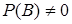
А ходисанинг В ходиса рўй берганлиги шартидаги эхтимоллиги
шартли эхтимоллик деб аталади
ва 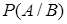
7-мисол. Кутида 3 та ок ва 3 та кора шар бор. Кутидан таваккалига оркага кайтармасдан икки марта биттадан шар олинади. Агар биринчи синовда кора шар чиккан бўлса (В ходиса), иккинчи синовда ок шарнинг чикиши (А ходиса)нинг эхтимоллиги топилсин.
Ечиш. Биринчи синовдан кейин кутида хаммаси бўлиб 5 та шар,
улардан 3 таси ок шар колди. Кидирилаётган шартли эхтимоллик 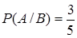
Энди шартли эхтимоллик формуласини чикарамиз. А
ва В ходисаларнинг рўй беришига n
та элементар ходисадан мос
равишда m ва k
таси кулайлик тугдирсин; у холда, (1.1) га асосан, уларнинг
шартсиз эхтимолликлари мос равишда 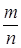 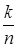
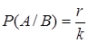
га тенг. Сурат ва махражни n га бўлиб, шартли эхтимолликнинг
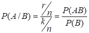
ёки
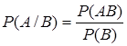
формуласини оламиз, чунки АВ ходисага r та элементар ходиса мос келади, бинобарин, 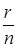
Назорат учун саволлар:
1. Кандай ходисалар биргаликда бўлмаган, кайсилари эса биргаликда бўлган ходисалар деб аталади?
2. «А ходиса ўзидан кейин В ходисани келтириб чикаради (эргаштиради)» деган ибора нимани билдиради ва у кандай белгиланади?
3. Ходисаларнинг йигиндиси деб нимага айтилади ва у кандай белгиланади?
4. Ходисаларнинг кўпайтмаси деб нимага айтилади ва у кандай белгиланади?
5. Карама-карши ходиса нима ва у кандай белгиланади?
6. Ходисаларнинг айирмаси деб нимага айтилади ва у кандай белгиланади?
7. Кандай ходисалар богликмас, кайсилари эса боглик ходисалар деб аталади?
8. Шартли эхтимоллик нима ва унинг формуласи кандай?